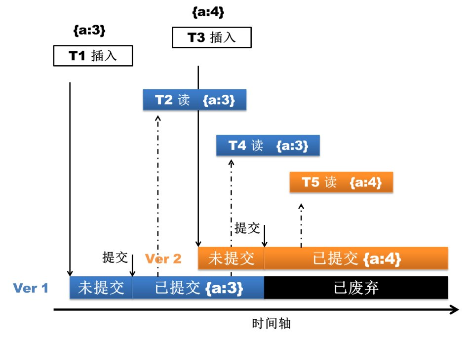

MongoDB es actualmente una base de datos no relacional (NoSQL) muy popular en la industria de TI; su flexible forma de almacenamiento de datos es muy valorada por los profesionales de TI actuales.
Tutoriales para novatos también ha seguido su paso y ha actualizado el contenido del tutorial a la versión 3.0. Los ejemplos del tutorial han sido probados en la versión 3.0.
Lo siguiente son las nuevas características de la versión 3.0:
API de motor de almacenamiento enchufable
MongoDB 3.0 introdujo la API de motor de almacenamiento enchufable, lo que facilita que los fabricantes de motores de almacenamiento de terceros se unan a MongoDB. Este cambio sin duda hace referencia al concepto de diseño de MySQL. Actualmente, además del antiguo motor de almacenamiento MMAP, WiredTiger y RocksDB han completado el soporte para MongoDB; el primero, tras ser adquirido por MongoDB, fue introducido directamente en MongoDB 3.0. La introducción de la API de motor de almacenamiento enchufable ofrece infinitas posibilidades para que MongoDB enriquezca su arsenal de herramientas y maneje más tipos de negocios. Motores de almacenamiento en memoria, motores de almacenamiento transaccional e incluso Hadoop podrían integrarse en el futuro.


Motor de almacenamiento WiredTiger
Si se dice que la API de motor de almacenamiento enchufable creó un arsenal para MongoDB 3.0, entonces WiredTiger es sin duda la primera y más importante bomba de este arsenal. Debido a los defectos naturales del motor de almacenamiento MMAP (consume espacio de disco y memoria y es difícil de limpiar, bloqueo a nivel de base de datos), MongoDB causó un gran dolor a los administradores de bases de datos, e incluso algunos comenzaron a cambiar a TokuMX, aunque este último tampoco es muy estable actualmente. MongoDB, al darse cuenta de este problema, tomó la decisión caprichosa de una empresa adinerada: adquirió directamente al fabricante de motores de almacenamiento WiredTiger e integró el motor de almacenamiento WiredTiger en la versión 3.0 (solo en versiones de 64 bits). Entonces, ¿qué características dignas de esperar tiene este motor que ha llegado al centro de atención?
1. Control de concurrencia a nivel de documento
WiredTiger implementa control de concurrencia a nivel de documento mediante MVCC, es decir, bloqueo a nivel de documento. Esto permite que múltiples solicitudes de clientes actualicen simultáneamente varios documentos de una colección en memoria, sin tener que esperar en cola por el bloqueo de escritura a nivel de base de datos. Esto mejora el rendimiento de lectura y escritura de la base de datos y, al mismo tiempo, aumenta en gran medida la capacidad de procesamiento concurrente del sistema. El efecto de este punto se puede ver directamente desde la herramienta de monitoreo mongostat: la versión anterior del indicador de monitoreo tenía el campo 'lockeddb' (un valor demasiado alto de este indicador es un gran dolor de cabeza para los usuarios de Mongo), mientras que en la nueva versión de mongostat ya no se ve.

Versión MongoDB 2.4.12
$/home/mongodb/mongodb-linux-x86_64-2.4.12/bin/mongostat –port55060 insert query update delete getmore command flushes mapped vsize resfaults locked db idxmiss % qr|qw ar|aw netIn netOut conntime *0 *0 *0 *0 0 1|0 0 18g 18.3g 16.1g 0 ycsb:0.0% 0 0|00|0 62b 2k 1 13:04:01 *0 *0 *0 *0 0 1|0 0 18g 18.3g 16.1g 0 ycsb:0.0% 0 0|00|0 62b 2k 1 13:04:02 *0 *0 *0 *0 0 1|0 0 18g 18.3g 16.1g 0 ycsb:0.0% 0 0|00|0 62b 2k 1 13:04:03
Versión MongoDB 3.0 rc8
$/home/mongodb/mongodb-linux-x86_64-3.0.0-rc8/bin/mongostat –port55050 insert query update delete getmore command % dirty % used flushesvsize res qr|qw ar|aw netIn netOut conntime *0 *0 *0 *0 0 1|0 0.0 42.2 0 30.6G 30.4G 0|0 0|0 79b 16k 113:02:38 *0 *0 *0 *0 0 1|0 0.0 42.2 0 30.6G 30.4G 0|0 0|0 79b 16k 113:02:39 *0 *0 *0 *0 0 1|0 0.0 42.2 0 30.6G 30.4G 0|0 0|0 79b 16k 113:02:40
2. Compresión de datos en disco
WiredTiger admite compresión de bloques y compresión de prefijos para todas las colecciones e índices (si la base de datos tiene el journal habilitado, los archivos de journal también se comprimen). Las opciones de compresión admitidas incluyen: sin compresión, compresión Snappy y compresión Zlib. Esto supone otra buena noticia para los usuarios de MongoDB, porque muchas bases de datos MongoDB han tenido que ampliarse debido al excesivo consumo de espacio en disco del motor de almacenamiento MMAP. Entre ellas, la compresión Snappy es el método de compresión predeterminado de la base de datos, y los usuarios pueden elegir el método de compresión adecuado según sus necesidades de negocio. En teoría, la compresión Snappy es rápida y su tasa de compresión es aceptable, mientras que la compresión Zlib tiene una alta tasa de compresión, consume más CPU y es un poco más lenta. Por supuesto, si se elige usar compresión, MongoDB seguramente ocupará más CPU, pero dado que MongoDB no es particularmente exigente con la CPU, habilitar la compresión vale completamente la pena.


Además, el modo de almacenamiento de WiredTiger también ha mejorado enormemente. Las versiones antiguas de MongoDB asignaban archivos a nivel de base de datos; todas las colecciones e índices de la base de datos se almacenaban mezclados en los archivos de la base de datos, por lo que incluso si se eliminaba una colección o índice, el espacio en disco ocupado era difícil de reclamar automáticamente a tiempo. WiredTiger asigna archivos a nivel de colección e índice, y todas las colecciones e índices de la base de datos se almacenan en archivos separados. Cuando se elimina una colección o índice, los archivos de almacenamiento correspondientes se eliminan inmediatamente. Por supuesto, debido a la diferencia en el modo de almacenamiento, las bases de datos de versiones anteriores no pueden actualizarse directamente al motor de almacenamiento WiredTiger; solo se puede lograr mediante exportación e importación de datos.
Versión MongoDB 2.4.12
[mongodb@mongo-data-emergency-001.m6.momo.com mongodb_2_4_12]$ll drwxrwxr-x 3 mongodb mongodb 4096 2月 25 19:03local -rwxrwxr-x 1 mongodb mongodb 6 2月 25 19:04mongod.lock drwxrwxr-x 2 mongodb mongodb 4096 2月 27 18:30_tmp drwxrwxr-x 3 mongodb mongodb 4096 2月 27 18:39ycsb [mongodb@mongo-data-emergency-001.m6.momo.com mongodb_2_4_12]$ llycsb/ drwxrwxr-x 2 mongodb mongodb 4096 2月 27 18:39_tmp -rw——- 1 mongodb mongodb 67108864 2月 27 18:57ycsb.0 -rw——- 1 mongodb mongodb 134217728 2月 27 18:57ycsb.1 -rw——- 1 mongodb mongodb 2146435072 2月 27 18:57ycsb.10 -rw——- 1 mongodb mongodb 2146435072 2月 27 18:57ycsb.11 -rw——- 1 mongodb mongodb 2146435072 2月 27 18:57ycsb.12 -rw——- 1 mongodb mongodb 2146435072 2月 27 18:39ycsb.13 -rw——- 1 mongodb mongodb 268435456 2月 27 18:57ycsb.2 -rw——- 1 mongodb mongodb 536870912 2月 27 18:57ycsb.3 -rw——- 1 mongodb mongodb 1073741824 2月 27 18:57ycsb.4 -rw——- 1 mongodb mongodb 2146435072 2月 27 18:57ycsb.5 -rw——- 1 mongodb mongodb 2146435072 2月 27 18:57ycsb.6 -rw——- 1 mongodb mongodb 2146435072 2月 27 18:57ycsb.7 -rw——- 1 mongodb mongodb 2146435072 2月 27 18:57ycsb.8 -rw——- 1 mongodb mongodb 2146435072 2月 27 18:57ycsb.9 -rw——- 1 mongodb mongodb 16777216 2月 27 18:40ycsb.ns
[mongodb@mongo-data-emergency-001.m6.momo.com mongodb_3_0_0]$ll drwxrwxr-x 2 mongodb mongodb 4096 2月 28 18:32local -rw-rw-r– 1 mongodb mongodb 36864 3月 21 13:41_mdb_catalog.wt -rwxrwxr-x 1 mongodb mongodb 6 2月 28 18:32mongod.lock -rw-rw-r– 1 mongodb mongodb 36864 3月 21 13:42sizeStorer.wt -rw-rw-r– 1 mongodb mongodb 95 2月 28 18:32storage.bson -rw-rw-r– 1 mongodb mongodb 49 2月 28 18:32WiredTiger -rw-rw-r– 1 mongodb mongodb 433 2月 28 18:32WiredTiger.basecfg -rw-rw-r– 1 mongodb mongodb 21 2月 28 18:32WiredTiger.lock -rw-rw-r– 1 mongodb mongodb 921 3月 21 13:41WiredTiger.turtle -rw-rw-r– 1 mongodb mongodb 53248 3月 21 13:41WiredTiger.wt drwxrwxr-x 2 mongodb mongodb 4096 3月 21 13:41ycsb [mongodb@mongo-data-emergency-001.m6.momo.com mongodb_3_0_0]$ llycsb/ -rw-rw-r– 1 mongodb mongodb 19314257920 2月 2819:16 collection-4–1318477584648278106.wt -rw-rw-r– 1 mongodb mongodb 602112 3月 2113:40 collection-6–1318477584648278106.wt -rw-rw-r– 1 mongodb mongodb 262598656 2月 2818:53 index-5–1318477584648278106.wt -rw-rw-r– 1 mongodb mongodb 827392 3月 2113:40 index-7–1318477584648278106.wt -rw-rw-r– 1 mongodb mongodb 1085440 3月 2113:41 index-8–1318477584648278106.wt
3. Límite superior de uso de memoria configurable
WiredTiger admite la configuración de la capacidad de uso de memoria. El usuario puede controlar la memoria máxima que MongoDB puede utilizar mediante el parámetro storage.wiredTiger.engineConfig.cacheSizeGB; el valor predeterminado de este parámetro es la mitad del tamaño de la memoria física. Esto es otra buena noticia para los usuarios de MongoDB: el motor de almacenamiento MMAP es conocido por consumir memoria; con la suficiente cantidad de datos, simplemente usa toda la memoria disponible.
Mejoras del motor de almacenamiento MMAPv1
MongoDB 3.0, además de introducir WiredTiger, también ha mejorado el motor de almacenamiento original MMAP; este motor sigue siendo el motor de almacenamiento predeterminado en la versión 3.0. Lamentablemente, el motor de almacenamiento MMAP mejorado continúa asignando archivos a nivel de base de datos, y todas las colecciones e índices de la base de datos se almacenan mezclados en los archivos de la base de datos, por lo que el problema del espacio en disco que no se puede reclamar automáticamente a tiempo persiste.
1. La granularidad del bloqueo pasa de nivel de base de datos a nivel de colección
Esto también puede mejorar la capacidad de procesamiento concurrente de la base de datos hasta cierto punto.
2. Cambio en el modo de asignación de espacio para documentos
En el motor de almacenamiento MMAP, los documentos se almacenan en el orden en que se escriben. Si después de una actualización el documento aumenta de longitud y no hay suficiente espacio detrás de la posición de almacenamiento original para acomodar la parte incrementada, el documento debe moverse a otra posición en el archivo. Este movimiento de documentos causado por actualizaciones reduce gravemente el rendimiento de escritura, porque una vez que un documento se mueve, todos los índices de la colección deben sincronizar y modificar la nueva posición de almacenamiento del documento.
Para reducir la aparición de esta situación, el motor de almacenamiento MMAP proporciona dos modos de asignación de espacio para documentos: el modo de asignación adaptativa basado en paddingFactor (factor de relleno) y el modo de preasignación basado en usePowerOf2Sizes, siendo el primero el modo predeterminado. El primer modo calcula la longitud media de crecimiento de las actualizaciones de documentos basándose en el historial de actualizaciones de documentos de cada colección, y luego rellena una parte del espacio al insertar un nuevo documento o mover un documento antiguo. Por ejemplo, si el valor de paddingFactor de la colección actual es 1.5, al insertar un documento de 200 bytes se rellenarán automáticamente 100 bytes de espacio después del documento. El segundo modo no tiene en cuenta el historial de actualizaciones, sino que asigna directamente un espacio de almacenamiento de 2 elevado a N para el documento; por ejemplo, un documento de 200 bytes recibiría directamente un espacio de 256 bytes al insertarse.
MMAPv1 en MongoDB 3.0 abandonó el modo de asignación adaptativa basado en paddingFactor. Aunque este modo parecía inteligente, debido a que los tamaños de los documentos en una colección varían, los espacios rellenados también tienen tamaños diferentes. Si hay muchas operaciones de actualización en una colección, el espacio libre generado por los movimientos de registros es difícil de reutilizar debido a los diferentes tamaños. Actualmente, el modo de preasignación basado en usePowerOf2Sizes se ha convertido en el modo predeterminado de asignación de espacio para documentos. Este modo asigna y recupera espacios de tamaño 2 elevado a N (y cuando el tamaño supera los 2 MB, crece en múltiplos de 2 MB), por lo que es más fácil de mantener y utilizar. Si una colección solo tiene operaciones insert o in-place update, el usuario puede desactivar la preasignación de espacio estableciendo el indicador noPadding para esa colección.

Mejoras en los conjuntos de réplicas
1. Aumento de miembros del conjunto de réplicas
En MongoDB 3.0, el número máximo de miembros de un conjunto de réplicas aumentó de 12 a 50, pero el número máximo de miembros con voto sigue siendo 7, y el campo w:"majority" en getLastError solo representa la mayoría de los nodos de votación.
2. Cambio en el manejo del StepDown del nodo Primary
En un conjunto de réplicas, el comando replSetStepDown puede hacer que el nodo Primary actual abdique y se celebre una nueva elección de nodo Primary. MongoDB 3.0 realizó las siguientes modificaciones en el manejo de StepDown: 1) Antes de que el Primary abdique, primero se interrumpen ciertas operaciones de usuario de larga duración, como creación de índices, operaciones de escritura, tareas de MapReduce, etc.; 2) Para evitar la reversión de datos, el nodo Primary espera a que un nodo Secondary elegible se sincronice con los datos más recientes antes de abdicar, mientras que en versiones anteriores el Primary abdicaba siempre que un nodo Secondary estuviera sincronizado dentro de 10 segundos; 3) Además, el comando replSetStepDown agrega un nuevo parámetro secondaryCatchUpPeriodSecs, con el que el usuario puede especificar cuántos segundos espera el nodo Primary a que un nodo Secondary sincronice sus datos antes de abdicar.
Mejoras en clústeres fragmentados
1. Nueva función de herramienta sh.removeTagRange()
En versiones anteriores solo existía sh.addTagRange(); para eliminar un tagRange era necesario hacerlo manualmente en la colección config.tags.
2. Se proporciona un manejo de Read Preference más predecible
En la nueva versión, la instancia mongos ya no fija la conexión a los miembros del conjunto de réplicas al ejecutar operaciones de lectura, sino que reevalúa ReadPreference en cada operación de lectura. De esta manera, cuando se modifica Read Preference, su comportamiento es más fácil de predecir.
3. Proporcionar configuración de writeConcern para la migración de chunks
La nueva versión proporciona el parámetro writeConcern para los comandos moveChunk y cleanupOrphaned, ambos relacionados con la migración de chunks, dirigidos al balanceador.
4. Añadir visualización del estado del balanceador
En la nueva versión, se puede ver la información de estado del balanceador mediante sh.status().
Otros cambios
1. Optimizar la función explan
En la nueva versión, la función explain puede mostrar el plan de consultas para operaciones como count, find, group, aggregate, update, remove, etc. Los resultados son más completos y detallados.
2. Reescritura de las herramientas de MongoDB
En la nueva versión, todas las herramientas integradas de MongoDB han sido reescritas en el lenguaje Go. En particular, se ha añadido un mecanismo de paralelismo en mongodump y mongorestore, lo que puede acelerar enormemente la exportación e importación de datos.
3. Control de salida de registros
En la nueva versión, los registros se dividen en diferentes módulos, entre ellos ACCESS, COMMAND, CONTROL, GEO, INDEX, NETWORK, QUERY, REPL, SHARDING, STORAGE, JOURNAL y WRITE. Los usuarios pueden ajustar dinámicamente el nivel de registro de cada módulo, lo que sin duda facilita el diagnóstico de problemas del sistema.
4. Optimización de la construcción de índices
Durante el proceso de creación de índices en segundo plano, no se pueden realizar operaciones de eliminación de bases de datos, tablas o índices, y el proceso de creación de índices en segundo plano no se interrumpirá automáticamente por ello. Además, el uso del comando createIndexes permite crear varios índices a la vez y escanear los datos solo una vez, lo que mejora la eficiencia de la creación de índices.
Resumen
Lo anterior solo enumera algunas de las principales características y modificaciones de MongoDB 3.0. Si desea obtener más información, puede consultar las Release-Notes de MongoDB 3.0. En general, MongoDB 3.0 ofrece muchas características nuevas y sorprendentes, lo que hace que la gente sea más optimista sobre su desarrollo futuro.
Dirección del tutorial
Dirección del tutorial:http://www.runoob.com/mongodb/mongodb-tutorial.html
Haz clic para compartir notas
<p style="font-size:14px;">¡Las notas deben ser una extensión del contenido de este artículo!</p><br> <p style="font-size:12px;"><a href="../tougao.html" target="_blank">Para enviar un artículo, haz clic aquí</a></p> <p style="font-size:14px;"><a href="./runoob-user-test-intro.html" target="_blank">Cómo obtener el código de invitación de registro</a></p> <h3 class="text-muted"><i class="fa fa-info-circle" aria-hidden="true"></i> Antes de compartir notas, debes <a href=".." class="runoob-pop">iniciar sesión</a>.</h3> <p><a href="./runoob-user-test-intro.html" target="_blank">Cómo obtener el código de invitación de registro</a></p>